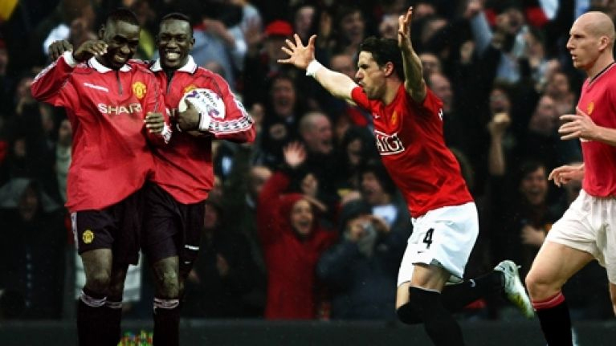

Manchester United, in full Manchester United Football Club, also called Manchester United FC, bynames Man U and the Red Devils, English professional football (soccer) team based in Manchester, England. Nicknamed “the Red Devils” for its distinctive red jerseys, it is one of the richest and best-supported football clubs not only in England but in the entire world. The club has won the English top-division league championship a record 20 times and the Football Association (FA) Cup 12 times.
The club was formed as Newton Heath LYR in 1878 by workers from the Lancashire and Yorkshire Railway. Renamed Manchester United in 1902, the club won its first English league championship in 1907–08. In 1910 the club moved from its old Bank Street ground into Old Trafford stadium, which has served as the team’s home ever since.
Manchester United’s history since World War II has been dominated by two long-serving managers. Sir Matthew Busby was appointed manager in 1945 and over the next 24 years steered the club to five English league and two FA Cup victories. The club had to contend with tragedy in 1958 when an aircraft carrying the team crashed in Munich, killing 23 of the 44 onboard. In the 1960s the team, rebuilt by Busby, included the highly talented attacking trio of Bobby Charlton, George Best, and Denis Law. In 1968 this team became the first English club to win the European Cup (now known as the Champions League) with a 4–1 victory over Benfica of Portugal in the final.
The former coach of the Scottish team Aberdeen, Alex Ferguson, managed the club from 1986 to 2013 and presided over an unparalleled spell of dominance in the English league. Manchester United has won 12 Premier League titles since that league’s inaugural season in 1992–93. In the 1998–99 season the club secured the first “treble” in English football history by winning the Premier League, the FA Cup, and the Champions League. A second Champions League victory came in the 2007–08 season.
Manchester United is renowned for its youth team program, which has generated many notable homegrown players who later performed for the club’s first team, including David Beckham. The club has also brought in a number of major transfer signings over the years, such as Wayne Rooney, Rio Ferdinand, Andy Cole, Roy Keane, Eric Cantona, Patrice Evra, Dimitar Berbatov, and Cristiano Ronaldo.
Manchester United was the highest-earning football club in the world for 2017–18 season, with an annual revenue of €676.3 million, and the world's most valuable football club in 2018, valued at £3.1 billion. As of June 2015, it is the world's most valuable football brand, estimated to be worth $1.2 billion. After being floated on the London Stock Exchange in 1991, the club was purchased by Malcolm Glazer in May 2005 in a deal valuing the club at almost £800 million, after which the company was taken private again, before going public once more in August 2012, when they made an initial public offering on the New York Stock Exchange. Manchester United is one of the most widely supported football clubs in the world, and has rivalries with Liverpool, Manchester City, Arsenal, and Leeds United.
We are one of the most popular and successful sports teams in the world, playing one of the most popular spectator sports on earth. Through our 140-year heritage we have won 66 trophies, including a record 20 english league titles, enabling us to develop what we believe is one of the world's leading sports brands and a global community of 659 million followers.
Our Old Trafford stadium, commonly known as "The Theatre of Dreams," was originally opened on February 19, 1910 with a capacity of approximately 80,000. During the Second World War, Old Trafford was used by the military as a depot, and on March 11, 1941 was heavily damaged by a German bombing raid. The stadium was rebuilt following the war and reopened on August 24, 1949. The addition of floodlighting, permitting evening matches, was completed in 1957 and a project to cover the stands with roofs was completed in 1959. After a series of additions during the 1960s, 1970s and early 1980s, capacity at Old Trafford reached 56,385 in 1985. The conversion of the stadium to an all-seater reduced capacity to approximately 44,000 by 1992, the lowest in its history. Thereafter, we began to expand capacity throughout the stadium, bringing capacity to approximately 58,000 by 1996, approximately 68,000 by 2000, and approximately 76,000 in 2006. Current capacity at Old Trafford is 75,454.
| ARCHITECT | Archibald Leitch (1909) |
| OPENED | 1910 |
| CAPACITY 2018/2019 | 75,454 |

Since the inception of the Premier League in 1992, our club has enjoyed consistent success and growth with popular players such as Eric Cantona, David Beckham, Ryan Giggs, Paul Scholes, Roy Keane, Bryan Robson, Cristiano Ronaldo, Wayne Rooney and Robin van Persie. The popularity of these players, our distinguished tradition and history, and the on-field success of our first team have allowed us to expand the club into a global brand with an international follower base.